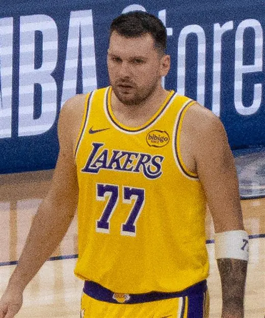
Armador
Foto: Erik Drost, CC BY 4.0
Luka Dončić
Maestro do pick-and-roll
Ninguém começa arremessando de três. Primeiro vem a bola na mão, depois o arremesso colado à cesta, e só então a distância.
Três níveis, do primeiro quique à jogada de decisão. Cada exercício mostra o movimento.
20 jogadores. Escolha um e treine os movimentos que definem o jogo dele.

Maestro do pick-and-roll
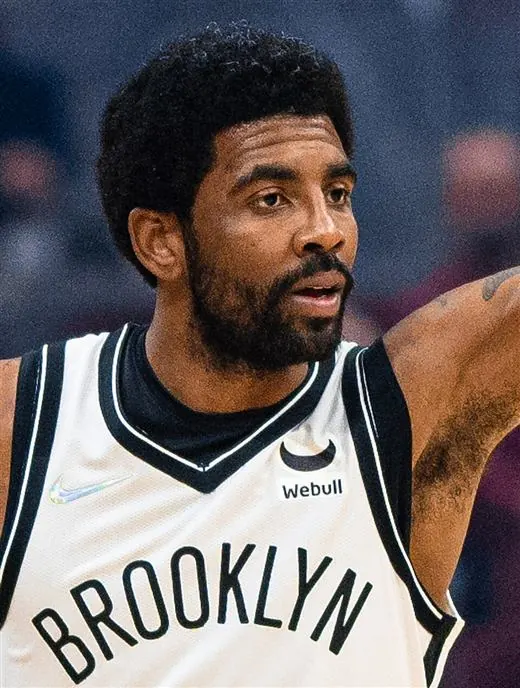
Mãos mais rápidas
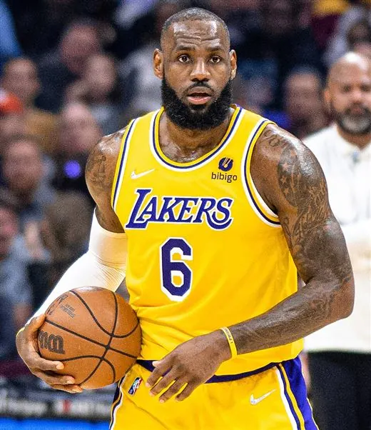
Ataque em linha reta
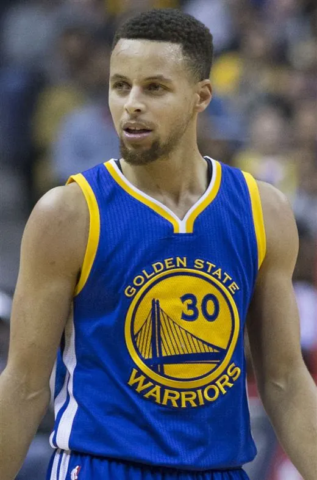
Arremessador sem limite
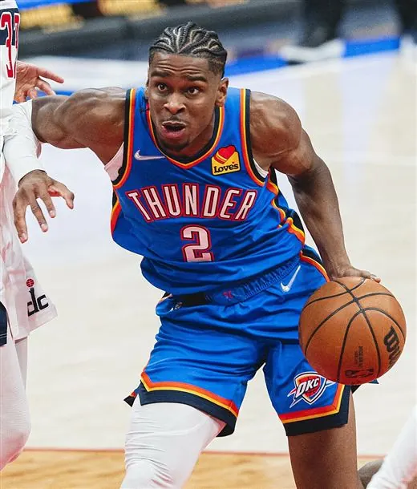
Rei da média distância
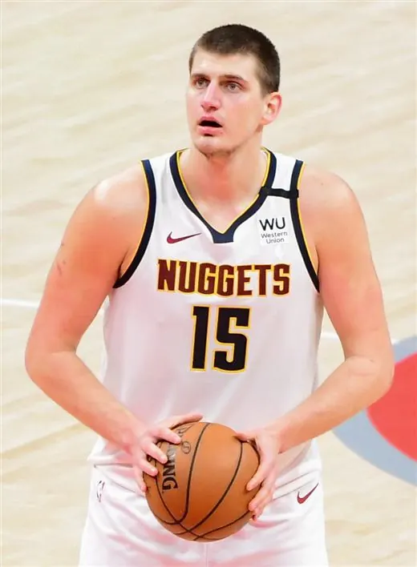
Pivô que joga de armador
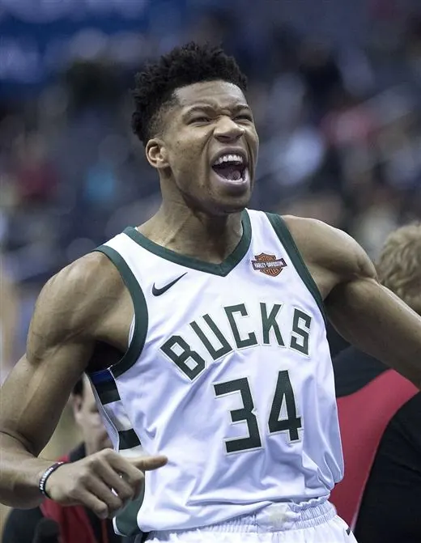
Passadas longas até o aro
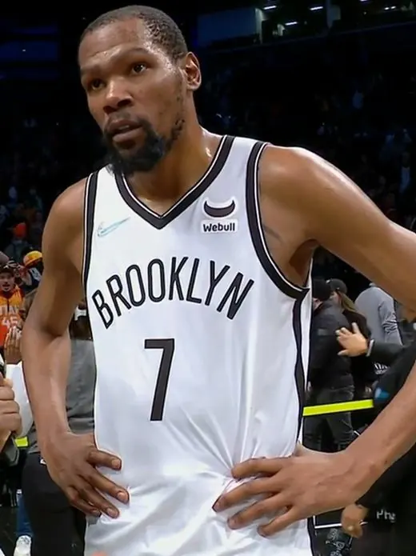
Arremesso impossível de marcar
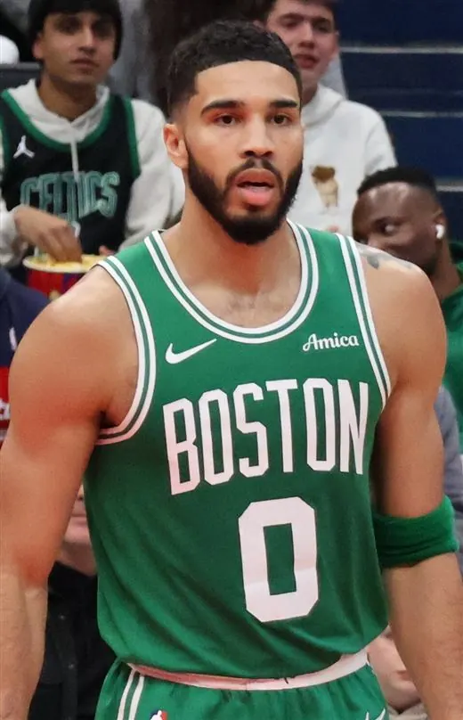
Ala de três níveis
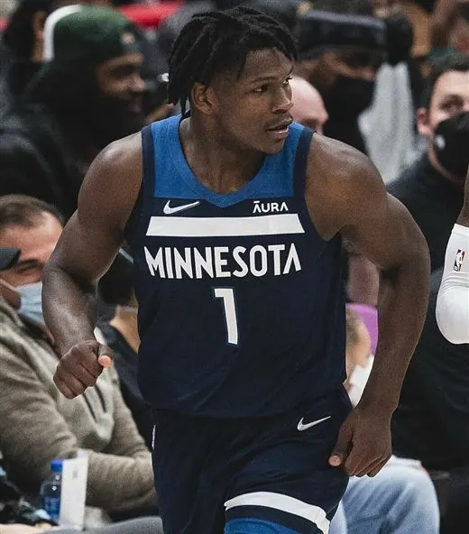
Ataque explosivo
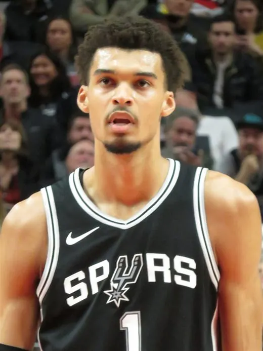
Pivô que faz tudo
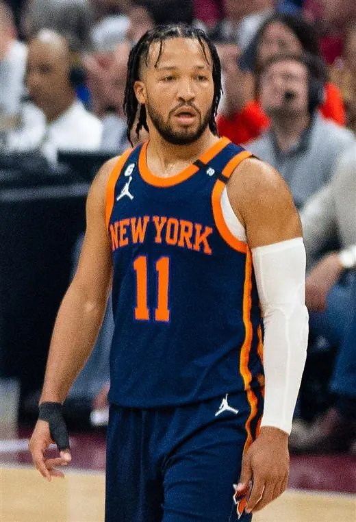
Trabalho de pés de veterano
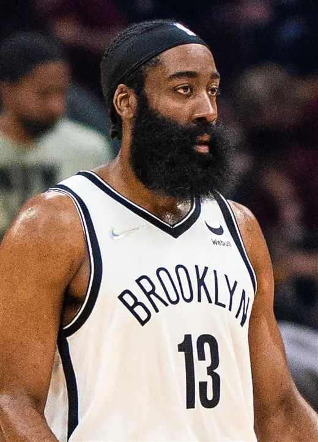
Mestre do step-back
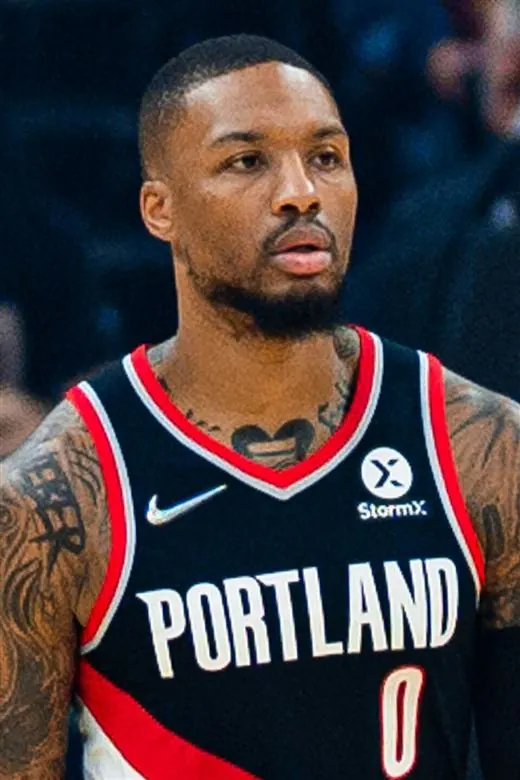
Arremesso do logo
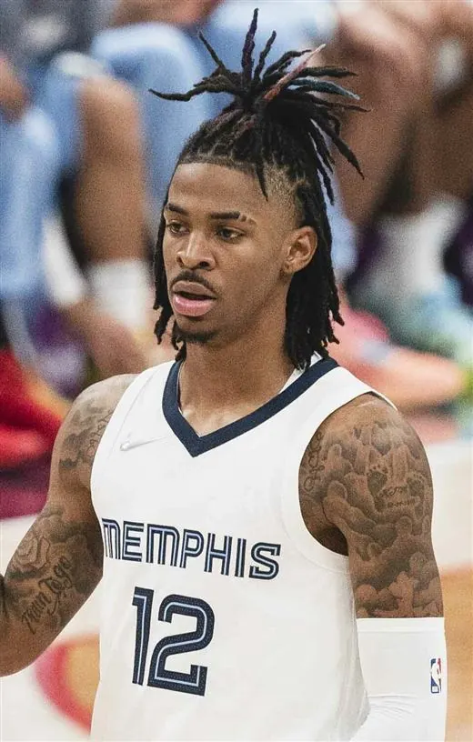
Voo até o aro
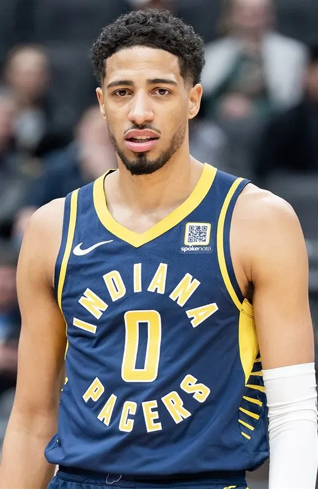
Armador que pensa no passe
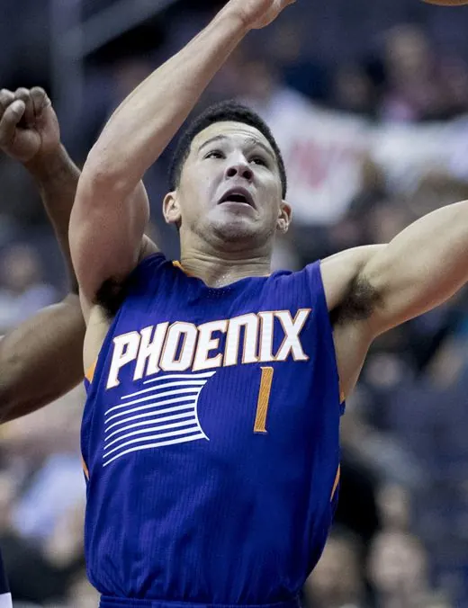
Artista da média distância
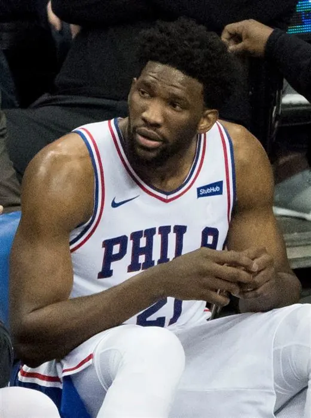
Pivô com jogo de ala
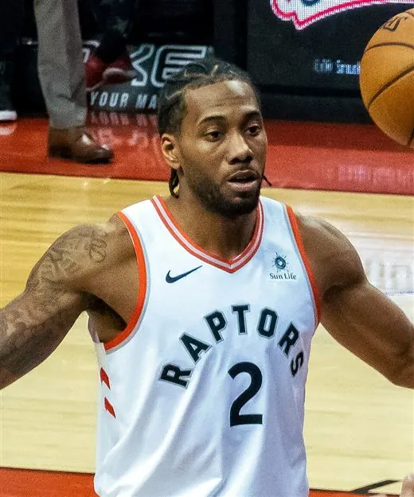
Defesa e média distância
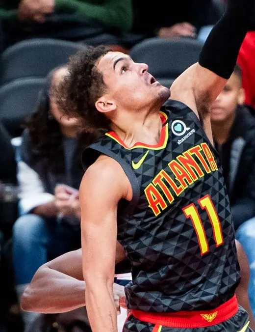
Floater e passe
O Basketball Practice não tem relação com os jogadores, com a NBA nem com os times. Fotos da Wikimedia Commons; o time na foto é o da época em que ela foi tirada.
Números de exemplo, só para esta prévia.
Diga o tempo, o nível e o foco; ele monta a sessão começando pelo aquecimento.
Registre cada zona da quadra e veja onde você mais acerta.
Acertos, erros e sequências, sem tirar o olho da cesta.
Objetivos com prazo e sequência de dias treinando.
Acompanhe a sua evolução ao longo do tempo.
Prévia de estilo da página inicial. O app ainda não mudou.